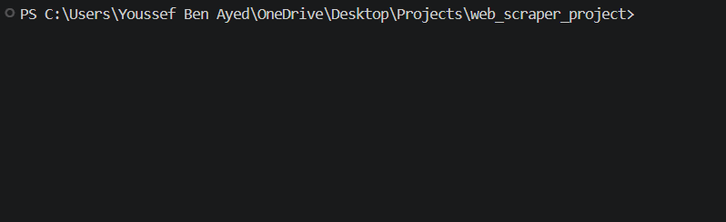
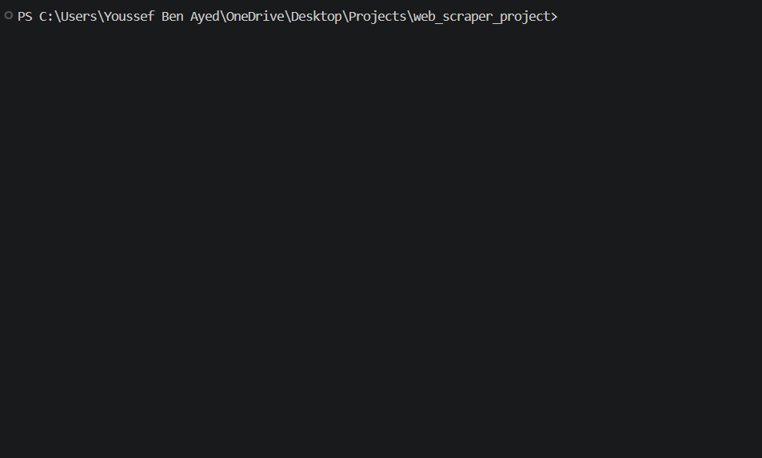
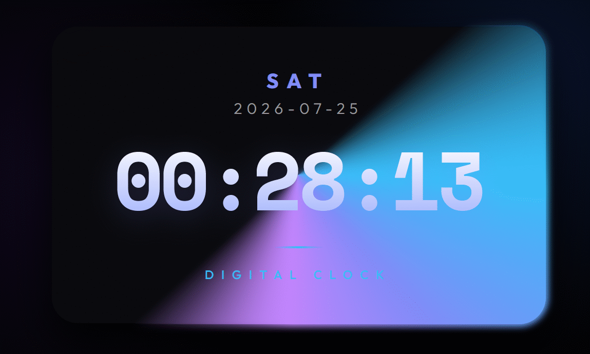
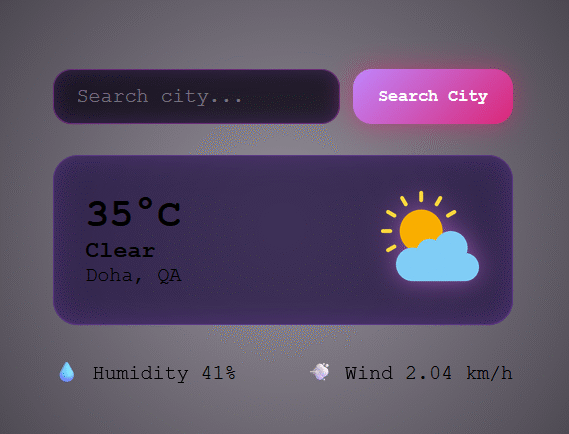

مطور بايثون متاح للعمل
مرحباً، أنا يوسف بن عياد
مطور بايثون متخصص في بناء أدوات الأتمتة المخصصة وسحب بيانات المواقع (Web Scraping) بسرعة فائقة ومعالجة البيانات الضخمة.
تمرير للأسفلرحلتي في عالم البرمجة
من الشغف بالتقنية إلى استكشاف آفاق الأمن السيبراني والذكاء الاصطناعي
الخطوات الأولى في عالم الويب
بدأت رحلتي بالفضول تجاه كيفية عمل المواقع والتقنيات من خلف الكواليس، وتعلمت أساسيات تطوير واجهات المستخدم وبناء أولى مشروعاتي البسيطة.
بناء مشاريع تفاعلية حقيقية
تجاوزت مرحلة التعلم النظري وبدأت بتطبيق مشاريع متقدمة مثل الآلة الحاسبة، تطبيق الطقس، والساعة الرقمية السينمائية بتصميمات عصرية وأكواد نظيفة.
الأمن السيبراني والذكاء الاصطناعي
أطمح لتوسيع مداركي بعمق نحو أنظمة الحماية والأمن السيبراني، ودمج تقنيات الذكاء الاصطناعي لبناء حلول تقنية مبتكرة ومؤثرة.
إحصائيات وأرقام
0
السكربتات والأدوات
0
موقع تم سحب بياناتها
0
ساعات عمل تم توفيرها
الخدمات التي أقدمها
سحب البيانات الضخمة (Big Data Scraping)
سحب آلاف المنتجات والبيانات من المتاجر والمواقع بدقة وسرعة عالية باستخدام تقنيات البرمجة المتوازية، وتصديرها كملفات Excel أو CSV منظمة ونظيفة.
أتمتة المهام والعمليات (Task Automation)
بناء سكربتات ذكية تختصر عليك ساعات العمل اليدوي اليومي وتتحكم بالمتصفح، رفع الملفات، وتحديث البيانات تلقائياً دون تدخل بشري.
مشاريعي الأخيرة

أداة سحب البيانات الذكية
سكربت بايثون متقدم لسحب وتنظيم البيانات من المواقع المعقدة والتجارة الإلكترونية بسرعة عالية وتصديرها لملفات منظمة.

أداة فحص الشبكة والأمن السيبراني
أداة متقدمة مبنية بلغة بايثون لفحص أمان الشبكات المحلية وتتبع البيانات الجغرافية للـ IP.

ساعة رقمية تفاعلية
تطبيق ويب يعرض الوقت والتاريخ الفعلي بشكل حي، تم بناؤه بتصميم سينمائي زجاجي جذاب وتجاوب كامل.

تطبيق الطقس المباشر
تطبيق تفاعلي يجلب حالة الطقس الحية لأي مدينة في العالم بالاعتماد على ربط واجهات البرمجة APIs.

آلة حاسبة سحرية
آلة حاسبة علمية متطورة بتصميم جذاب وتفاعل كامل مع الكيبورد للعمليات الحسابية السريعة.
تحدث عن مشروعك
مستعد لتحويل أفكارك إلى حلول برمجية واقعية توفر وقتك وجهدك.